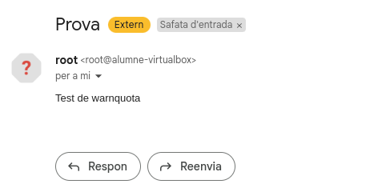

Quotes de Disc en Linux
1. Concepte de Quotes de Disc
Les quotes de disc són un mecanisme dels sistemes operatius Linux per: - Controlar i limitar l'ús dels recursos d'emmagatzematge - Gestionar l'espai en disc i nombre de fitxers per usuari/grup
2. Finalitat de les Quotes
- Prevenir l'ús abusiu de recursos per part d'usuaris individuals
- Garantir distribució equitativa de l'espai disponible
- Evitar l'esgotament accidental del disc per part d'un usuari
- Millorar l'administració dels recursos compartits
3. Tipus de Quotes
3.1. Quotes d'ús de disc (block quotas)
- Limiten la quantitat d'espai en disc (mesurat en blocs)
- Mida típica de bloc: 1KB o 4KB
3.2. Quotes d'inodes
- Limiten el nombre de fitxers/directoris
- Cada element del sistema de fitxers ocupa 1 inode
4. Nivells de Limitació
| Tipus de Límit | Descripció | Comportament |
|---|---|---|
| Quota Tova (soft limit) | Límit temporal | Permet superar-lo durant període de gràcia |
| Quota Dura (hard limit) | Límit absolut | No es pot superar en cap cas |
| Període de Gràcia | Temps permès sobre quota tova | Normalment 7 dies per defecte |
5. Components del Sistema de Quotes
5.1. Elements del Nucli
- Subsystem de quotes al nucli Linux
- Suport per a diferents sistemes de fitxers
5.2. Fitxers de Quotes
aquota.user(per usuaris)aquota.group(per grups)
5.3. Eines d'Administració
quotacheck: Verifica i crea fitxers de quotesquotaon/quotaoff: Activa/desactiva quotesedquota: Edita quotes d'usuaris/grupsrepquota: Mostra informació de quotes
6. Sistemes de Fitxers Compatibles
- ext3/ext4 (més comuns en Linux)
- XFS
- JFS
- ReiserFS
7. Flux de Funcionament
- Administrador configura quotes al sistema de fitxers
- El nucli monitoritza l'ús del disc
- Quan s'acosta als límits:
- Notifica a l'usuari
- Aplica restriccions segons configuració
- Eines d'administració permeten monitorar i ajustar
8. Avantatges del Sistema de Quotes
✅ Distribució controlada de recursos
✅ Prevenció d'incidències per disc ple
✅ Millor administració en entorns multiusuari
✅ Configuració granular per usuari/grup
9. Limitacions
❌ Requeriment de suport del sistema de fitxers
❌ Configuració inicial complexa
❌ Pot afectar rendiment en sistemes grans
❌ No gestiona quotes per projecte (sense configuracions addicionals)
Aplicació i Configuració
En aquest apartat configurarem les quotes de disc a usuaris i grups del sistema.
Primer que instal·larem quota amb la següent comanda:

Aqui crearem un particio /dev/sdb1 i despres ho montarem a la mnt/dades_pellisa.

Una vegada hem realitzat la preparacio del disc, procedim a comprovar els fitxers de quota, tan mateix aquestes comandes ens verificaran l'existencia del mateix.

Quota Usuaris
Aqui assignarem la quota a l'usuari mitjançant aquesta comanda i poden editar manualment la quota.

I podem establir els limits Soft i Hard manualment.

Aquesta es una altra comanda que ens permet assignar quotes a usuaris de la mateixa forma que l'altra, pero evitant entrar al fitxer de configuració manual.

Despres visualtizem la quota i creem fitxers de prova i directoris amb l'usuari que l'hi hem establit la quota.

Aquesta comanda ens permet crear un fitxer de manera controlada per intentar veure com sobrepassem el limit.

Aqui seguim creant fins que ens denega la creació, ja que superem el limit de quota.

Aqui visualitzem la cuota de l'usuari CLient1 i veiem el limit i el que portem ocupat.

Aqui probem de realitzar un altra prova amb interficie grafica i tamb ens diu el seguent error, hem superat la quota de l'usuari.

En aquesta captura mostrem la insta·lació de Warnquota que ens permetra reenviar correus als usuaris quan es superi el limit de quota.

Configurem el servei de correu.

Omplim aquests camps amb les dades que ens requereixen.

Editarem el fitxer warnquota.conf amb el missatge personalitzat.

L'executem i l'afegim al crontab per a que s'excuti diariament.


Finalment rebem el correu de test pero no arribem a obtindre el correu de limit de quota, ja que tenim algun error de sintaxis. 
Quota Grups
Una altra manera molt utilitzada per aplicar quotes és fer-ho a nivell de grups. En aquest cas, podem assignar una quota a un grup i afegir-hi els usuaris. Així, els usuaris dins d'aquest grup heredaran la quota del grup i prevaldra sobre la personal de usuari.
Afegim l'usuari Client1 al grup Nois, i assignem la quota al grup.

En aquesta captura, podem veure que l'usuari client1 està dins del grup nois, però quan utilitzem la comanda repquota -g /mnt/dades_pellisa per verificar les quotes del grup, la quota aplicada a l'usuari client1 continua sent la seva quota individual, no la del grup.
Quan verifiquem la quota de l'usuari amb la comanda repquota -u /mnt/dades_pellisa, veiem que la quota de client1 preval sobre la quota del grup, ja que la quota personal de l'usuari és visible en lloc de la quota del grup. Això confirma que, quan un usuari té una quota assignada directament, aquesta preval sobre les quotes assignades al grup.

Afegirem un nou usuari amb el nom Andrea i l'hi donem els permisos seguents i l'afegim al grup Nois.

Aqui realitzem la creació dels fitxers per sobrepassar el limit.

Aqui per motius tecnics realitzem la creacio de un nou grup amb l'usuari andrea i la seva assignacio de quota com a grup.
 Donem permisos del grup sobre la carpeta de montatge.
Donem permisos del grup sobre la carpeta de montatge.

I aqui tornem a la creació de fitxers i podem veure com classe va pujant el limit de quota.

Aqui tornem a realitzar la creació i veiem que ja ens denega perque ja hem superat el limit de quota del grup.

Podem comprovarho amb la comanda seguent i veiem que el grup te el simbol de + conforme ha superat el limit de quota.